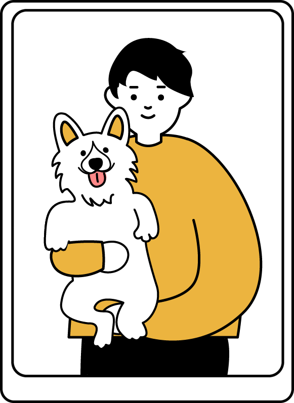

다롱아
오늘도 내일도
다시만나!
반려동물의 노화와 이별을 준비하는 서비스
: Re meet

다롱아
오늘도 내일도
다시만나!
반려동물의 노화와 이별을 준비하는 서비스
: Re meet
노령견,묘의 비율은 매년 증가하고 있지만, 반려동물의 노화와 이별을 생각하지 못하고
준비되지 않은 채 떠나보낸 많은 반려인들은 펫로스 증후군을 겪고 있습니다.
왜 더 잘해주지 못했을까? 왜 더 사랑해주지 않았을까? 왜 더 많은 추억을 남기지 못했을까?
우리 리밋(remeet)은 반려인들이 겪는 이별의 아픔을 줄일 수 있도록,
시니어펫과의 소중한 하루하루를 기록하고 기억할 수 있도록 돕기 위해 기획된 앱 서비스입니다.
매년 증가하는 반려 동물 보유 가구 수. 2017년 기준 약 600만에 도달하여 이는 전체 중 28.1%.
즉, 국내 4가구 중 1가구가 반려동물과 함께하고 있음을 알 수 있습니다.
출처 - 농림축산산업본부
| 2012년 | ||
| 2015년 | ||
| 2017년 | 28.1% |
세상에 머무르는 시간이 다른 우리.
인간과 달리 평균수명이 10~15년을 넘지 않는 반려동물들. 그들은 이제 노령화 시대에
접어들게 되었고, 이에 따라
반려인들 또한 증가하게 되었습니다.
오랫동안 가족의 일원으로 함께 지낸 반려동물이 죽거나 사라진 후 생기는 상실감과 고통, 슬픔.
반려인들은 사별 후 펫로스 증후군을 앓게 되고, 우리는 그를 예방하기 위해 이별을
보다 현실적으로 준비하고, 이별 후를 대처할 수 있도록 반려인들을 돕습니다.
“ 평생 아기일 것만 같았던 보리가 노령견이 되었어요.
그간의 추억과 기록들이 이렇게 적었나 싶어요.
후회만 하고 있기엔 시간이 너무 아까워요. ”
추억챌린지, 펫킷리스트,한 줄일기
“ 제게 나비는 친동생이나 다름이 없어요.
지금의 저는 나비가 없으면 살지 못할 거예요.
나중에 후회하지 않도록 마음의 준비를 해야 할 것 같아요 ”
시니어펫 지침서, 이별 방법 안내
“ 태풍이를 떠나 보낸 뒤 상실감에 힘이 들어요.
같은 고민과 슬픔을 가진 사람들과 함께
서로의 마음을 솔직하게 나누고 싶어요. ”
기억 보관소 리밋, 커뮤니티
반려인 자신의 감정을 솔직하게 표현하며 추억을 쌓고, 반려동물의 노화와 죽음을 자연스럽게 이해하며 이별을 현실적으로 준비할 수 있습니다.
이를 통해, 반려인과 반려동물 모두의 행복을 함께하고 있다는 것을 느낄 수 있습니다.
시니어펫과 살아가는
반려인들
소중한 하루하루를
기억하고 싶은
잊지 못할 추억을
남기고 싶은
언젠가 다가올 이별에
최선을 다 하고 싶은
강아지와 고양이의 형태를 라인으로 표현하여 부드러운 느낌을 주었고,
그 라인을 실타래처럼 이어 '언제나 함께하는 반려동물과 반려인' 이라는 브랜드의 의미를 담았다.
R 255
G 192
B 41
강아지와 고양이의 형태를 라인으로 표현하여 부드러운 느낌을 주었고,
그 라인을 실타래처럼 이어 '언제나 함께하는 반려동물과 반려인' 이라는 브랜드의 의미를 담았다.
홈 화면을 통해
나의 사랑스러운 반려동물의 사진을
볼 수 있습니다
사랑하는 반려동물과 한 달 계획을 함께 세워보세요.
기록을 자세하게 작성할 수 있고 추억상자를 통해 내가 작성한 펫킷리스트를 확인할 수 있습니다.
하루 한 줄씩 그 순간의 감정과 답변의 이유를 상세하게 작성하다 보면
나중에 일기를 모아볼 때 생생한 감정을 느낄 수 있습니다.
단, 하루가 지나면 수정이 불가능합니다.
매일매일 추억 챌린지를 확인해 보세요.
추억 상자를 열고 주어진 미션은 24시간 안에 수행할 수 있고
하루가 지나면 수정을 할 수 없습니다.
나의 반려동물을 비롯한 시니어 펫의 노화를 이해하고
이별에 대비할 수 있도록 준비를 도와주는 지침서입니다.
사랑스러운 반려동물의 작별 인사를 위한
준비 과정을 안내하는
이별 안내서를 제공합니다.
반려동물을 안전하게 떠나보낼 수 있도록
합법적인 24시간 병원 및 장묘 업체 안내를
지역별로 제공합니다.
같은 고민을 나누고 있는 사람들과 함께
소통을 할 수 있는 공간입니다.
나의 반려동물과 쌓은 추억을 기념할 수 있고
필요한 물건을 나누고 펫로스 증후군을
겪는 사람들과 소통하면서 위로를 나눌 수
있습니다.
무지개별로 떠나게 된 반려동물을
기억 보관소 리밋으로 보낼 수 있습니다.
반려동물에게 따뜻한 편지를 보낼 수 있고
하루 하나씩 쌓았던 추억들도 열람할 수
있습니다. 추억상자와 편지 기능을 통해
펫로스 증후군을 회복하고 언제 어디서든
반려동물과함께 할 수 있습니다.
떠나보낸 나의 소중한 반려동물을 위한 편지를 작성할 수 있습니다.
소중한 추억들과 보여 주고 싶은 사진들과 함께
반려동물이 있는 무지개별로 편지를 보내보세요.
떠난 나의 반려동물과 함께 한 추억들을 한 공간에서 모아 볼 수 있습니다.
추억 챌린지와 펫킷리스트를 통해 한 겹씩 쌓인 반려동물과의 소중한 추억을
확인해 보세요.